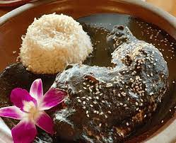

Oaxacan Black Mole
Rich and Flavorful: Exploring the Secrets of Black Mole Sauce

Ingredients
- Chicken pieces (e.g., thighs and drumsticks)
- Rice
- Black mole sauce
- Chicken broth
- Onion
- Garlic
- Vegetable oil
- Salt and pepper
Recipe
-
Sear the Chicken
- Heat vegetable oil in a large skillet or pot over medium-high heat.
- Season the chicken pieces with salt and pepper.
- Sear the chicken until it's golden brown on all sides. Remove and set aside.
-
Saute Aromatics
- In the same pot, add a bit more oil if needed.
- Add finely chopped onion and minced garlic.
- Saute them until they become translucent and aromatic.
-
Add Mole Sauce and Chicken:
- Pour in the black mole sauce and chicken broth.
- Stir to combine, ensuring the mole sauce dissolves into the liquid.
- Return the seared chicken to the pot.
-
Simmer and Cook:
- Reduce the heat to a gentle simmer.
- Cover the pot and let it cook for about 30-40 minutes, or until the chicken is cooked through and tender.
-
Serve with Rice:
- While the chicken is simmering, cook the rice according to the package instructions.
- Once the chicken is done, serve it alongside the cooked rice.
- Pour the rich black mole sauce over the chicken and rice.
- Garnish with fresh herbs or sesame seeds if desired.
Enjoy your homemade Oaxacan Black Mole Chicken with Rice!